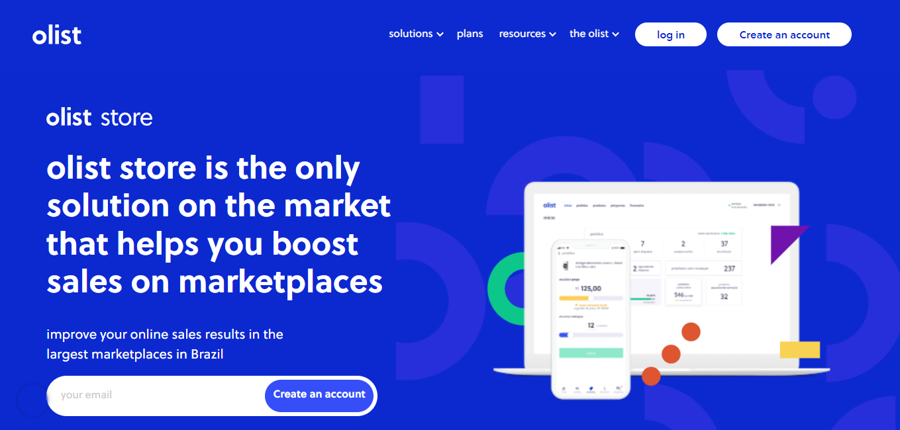
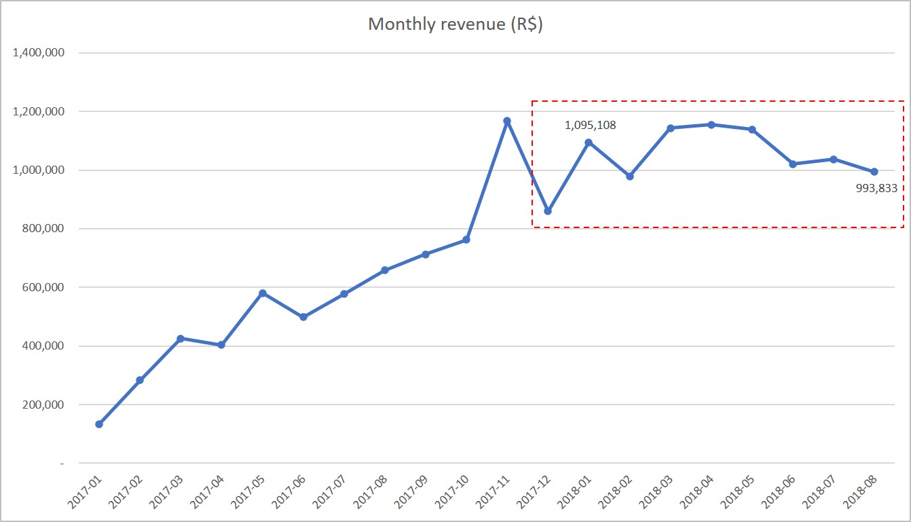
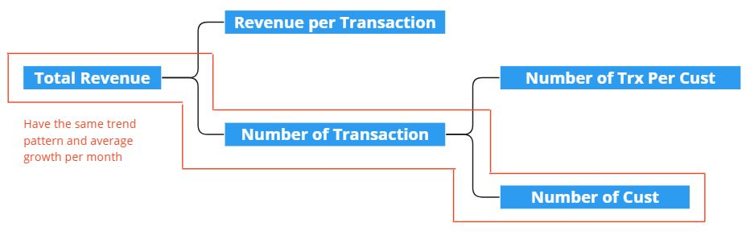
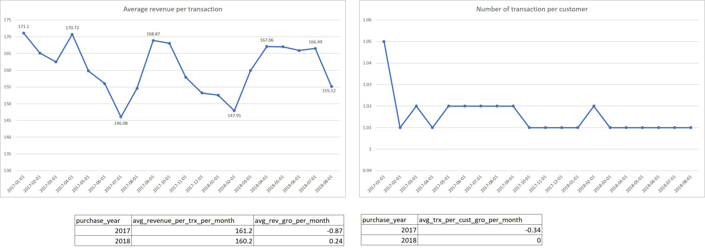
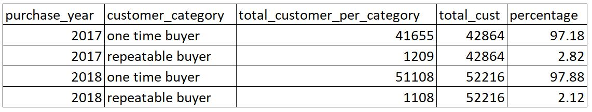
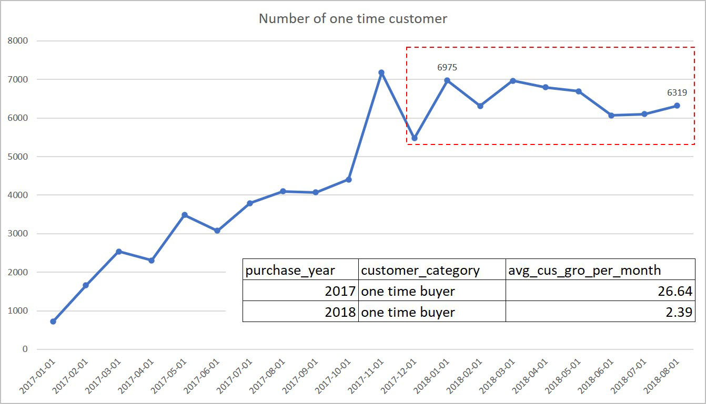

Root Cause Analysis of Olist Stagnant Revenue Growth
About the data and the project
This project uses data that has been shared by Olist, Dabague, and Francisco Magioli on Kaggle, you can see the data here.
It is explained that this data is a Brazilian ecommerce public dataset of orders made at Olist Store. There are also a few other paragraphs explaining what this olist actually is, but it still seems quite confusing. So I finally searched the web, here, to find out the context and business model of Olist.
So in short, Olist is a SaaS company that helps SMEs to sell in many e-commerce sites in Brazil and America with only one registration. With Olist, SMEs do not need to create multiple accounts in many e-commerce sites. However, the account name used to sell in each of these e-commerce is Olist Store. So basically, these SMEs display their merchandise on the Olist Store account while getting several other services such as consulting product displays and ads, adjusting product prices, reporting dashboards, product delivery management, lower courier costs, stock management, etc.
This project will focus on discussing the causes of Olist's revenue stagnation in 2018. And as a summary, the cause of the problem lies in the stagnation of one time customer growth and poor customer retention. Just give you some contexts, during 2017 and 2018, the distribution between one time customers and repeatable customers did not change, which was around 97.5% and 2.5%. Olist was unable to increase the ratio of the number of repeatable customers and on the other hand experienced stagnation in the growth of one time customers. The following is a detailed analysis.
*You can see my bigquery code in these links: data preparation and data exploration.
Exploratory Analysis
Based on their website, one of Olist's revenues comes from commissions on the sale of its users' products (seller). Therefore, one of the important metrics to look at is revenue itself. As shown in the graph, Olist revenue increased more than 9 times until November 2017 but stagnant and tends to decrease until August 2018.
To diagnose this problem, I explored the variables that make up revenue. Here is an illustration of the sequence of steps.
As we know, revenue value is formed from the number of transactions and the average value of one transaction. While the number of transactions is formed from the number of customers and the average number of transactions per customer. To find out what makes the revenue trend stagnant, there are quite a number of possible combinations that could be the cause. Therefore we need to explore these variables one by one.
First, there are not many changes in terms of revenue per transaction. There was only a decrease in value of 0.6% and an increase in growth of 1.11%. Likewise in terms of the number of transactions per customer. There was only an increase in growth of 0.34%.
Meanwhile, in terms of the number of transaction trends and the number of customer trends, the results resembled revenue trends. Likewise, the pattern of average transaction growth per month and average customer growth per month resembles the average revenue growth per month. There was a decrease in the average transaction growth value per month by 23.42% in 2018, and a growth of 2.22% (close to 0) indicating stagnation in the number of transactions. Likewise, in terms of the number of customers, there was a decrease in the average value of customer growth per month by 23.94% in 2018, and a growth of 2.3% (close to 0) indicating stagnation in the number of customers.

The composition of customers (users who make transactions) in both 2017 and 2018 is the same, which is about 97.5% of them are one-time buyers, while the rest are repeatable buyers. Unfortunately, we cannot see the composition of one time buyers, what is the ratio between new users (registered in 2018) and old users (who never made transactions in 2017) due to dataset limitations.
However, if you look at the number of one time buyers and the trend, it resembles the trend and the value of the number of customers.
So it can be concluded that Olist's revenue stagnation in 2018 was caused by 2 things, that is:
- One-time customer growth stagnation
- And poor customer retention (only 2% and no increase from the previous year)
One-time customer growth stagnation can be caused by a lack of performance from the marketing funnel (awareness, acquisition, activation) or conversion rate (retention, revenue). Or it could be caused by external factors such as competitors or the country's economic conditions.
Meanwhile, a bad customer retention rate can be caused by the lack of several benefits perceived by the customer, such as:
- Operational benefit
- product diversity and availability
- easy to use
- safe
- fast delivery services
- Commercial benefit
- price
- promotion
What's Next?
Although we know what causes Olist's revenue stagnation, this cause is still too general. We still have to explore the two sources of the problem in more detail, both from the data analysis approach and by surveys or user interviews.
If you look at the available Olist dataset, the most likely thing to do is to find the cause of the poor retention rate by looking at the relationship between retention rate and delivery time punctuality, order rating, and order comments. So that's what we're going to do next.